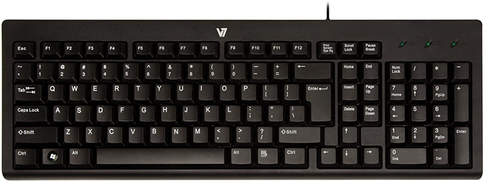

Case Study
- Test Image-
- Test Image-
- Test Image-
- Test Image-

- Test Image-

Output on Wolfram Project : paper clip
Output on Mobilenet : Stethoscope
None of them identified correctly
Output on Wolfram Project : breathalyzer
Output on Mobilenet : Desktop Computer
Mobilenet answered correctly
Output on Wolfram Project : computer mouse
Output on Mobilenet : Mouse
Both gave results accurately
Output on Wolfram Project : remote control
Output on Mobilenet : Switch
None of them identified correctly
Out of 5 imgs mobilenet identified 3 correctly so it is better Wolfram